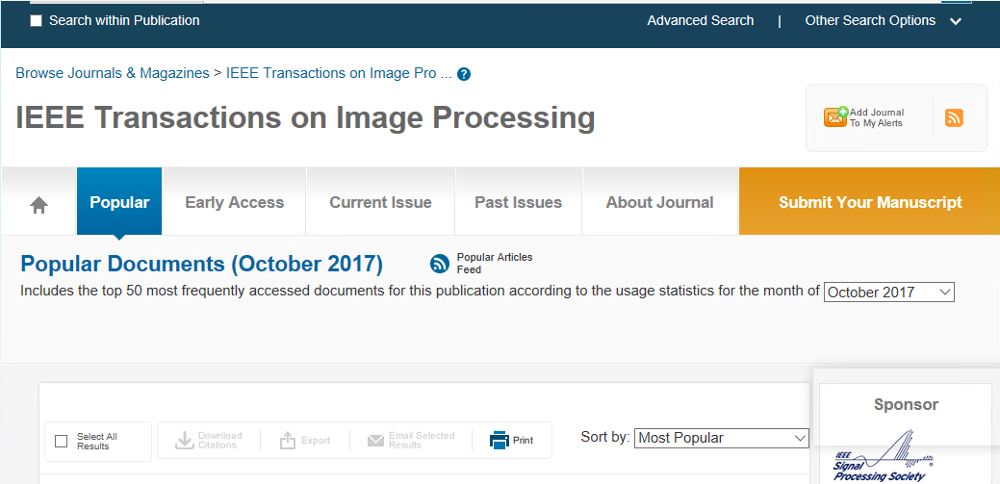
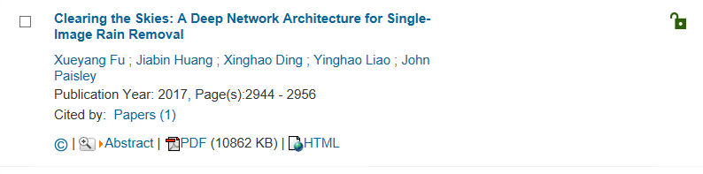

我实验室博士傅雪阳clearning the sky连续5个月上榜TIP最受欢迎top50

本篇论文"Clearing the Skies: A Deep Network Architecture for Single-Image Rain Removal "是在实验室导师组丁兴号教授,黄悦副教授的悉心的指导下完成的，是国际上第一篇将深度学习技术用于单幅图像去雨这一问题。详细可以在网上查找原文。
注:IEEE TIP是IEEE Transactions on Image Processing的简称，是图像处理领域的顶级刊物，中国计算机学会推荐国际学术刊物（计算机图形学与多媒体）A类三大期刊之一，即CFF A类刊物。IEEE TIP侧重图像处理的前沿理论与方法，在图像处理算法与理论领域具有重要和广泛的影响，目前期刊影响因子为3.625。。